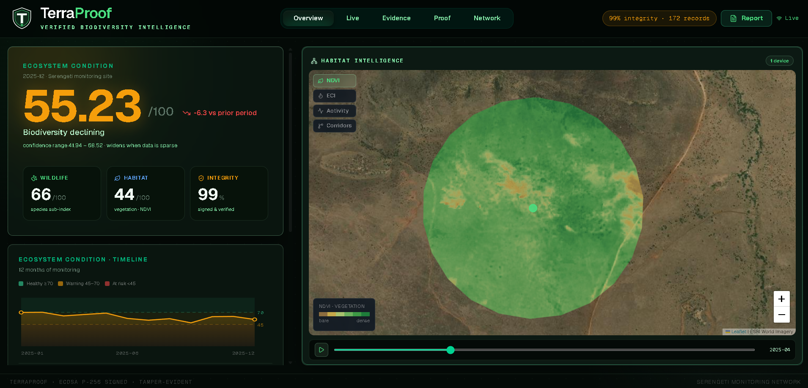

P.01
Trust-first, from the device up.
Every observation is anchored to a specific device, place, and moment, and signed before it leaves the field. What you receive is not a data point. It is testimony.
Edge AI detects and classifies wildlife on-device, cryptographically signs every observation, and fuses it with satellite habitat data into one defensible ecosystem-condition score. Continuous, verifiable evidence for the conservation, restoration, and nature-finance decisions that can no longer run on paperwork.
Request Pilot AccessBiodiversity decisions (species sign-off, restoration claims, credit issuance) now ride on field data that was never designed to be defended. TerraProof is the layer that makes it stand up.
The species taxonomy applies once an animal is detected. Detection is class-agnostic: it localizes any animal in frame, then the classifier names the species.
Every observation is anchored to a specific device, place, and moment, and signed before it leaves the field. What you receive is not a data point. It is testimony.
The field node is built around duty-cycled wake, solar + LiFePO4 power, and a secure element that never streams raw data: a deliberate hardware design, now moving from architecture to build.
Events are interpreted locally, waking compute only when something meaningful happens. Less energy, less bandwidth, less dependence on anyone else's uplink.
TerraProof does not stream raw data. It watches, interprets, seals, and hands you a record that travels without losing its integrity.
An on-device detection model scans every frame and localizes every animal in shot. Detection is class-agnostic, so nothing is missed for want of a matching category. Validated against real camera-trap imagery at pilot scale, engineered to run behind a duty-cycled wake trigger in the field.
When an event occurs, TerraProof wakes local compute to classify it: an on-device classification model scoring against a taxonomy of around 2,000 species. Species, individual count, confidence, resolved per frame, no cloud round-trip required.
The event is bound to its device, coordinates, and timestamp, hashed, and signed with the private key before it ever touches a network. Alter one field afterward and the signature breaks: visibly, specifically, provably.
Every record links to the previous one in a hash chain, then feeds into ESRS E4-5, TNFD Core, and Ökokonto / §41 BNatSchG-aligned reports, with full chain of custody from field to filing. Anyone downstream can verify, cold.
A system designed to generate defensible ecosystem intelligence by combining local cryptographics, edge inference, and satellite baseline validation.
Every observation is bound to local metadata and signed using ECDSA (P-256) via the secure hardware element. Detections are grouped and hash-chained sequentially, ensuring that any downstream modification breaks the integrity check.
A composite index combining fauna indicators (richness, abundance, and conservation-status weightings) with acoustic complexity metrics and Sentinel-2 NDVI satellite structure data to synthesize a baseline-calibrated score.
Run locally on an optimized edge stack: class-agnostic animal detection paired with an on-device species classifier. Acoustic sensors perform duty-cycled bird/bat call sweeps, engineered for ultra-low standby power draw.
The pilot-partner dashboard is built and running today, turning signed field records into a decision-ready ecosystem verdict.

Presence claims you can actually present: to regulators, to developers, to anyone whose decision turns on whether the animal was really there.
Moving past "we planted X." TerraProof turns the return of fauna into a defensible, dated, location-bound record.
Biodiversity credits will only be worth what their field evidence can carry. TerraProof is built for the day that bar is raised.
The software you've just read about is running today. The hardware node (camera, standard + ultrasonic microphones for birdsong and bat calls, an environmental sensor, GPS, and a secure element) is the architecture we're building toward next.
Engineering specifications for a purpose-built field node: solar-powered, duty-cycled, engineered for multi-year autonomous deployment.
No spam. Roadmap updates only.
We're onboarding a small cohort of sites for our first field pilots. If you manage land under ESS6, IFC PS6, or restoration-compliance obligations and want continuous monitoring instead of annual snapshots, we want to talk.